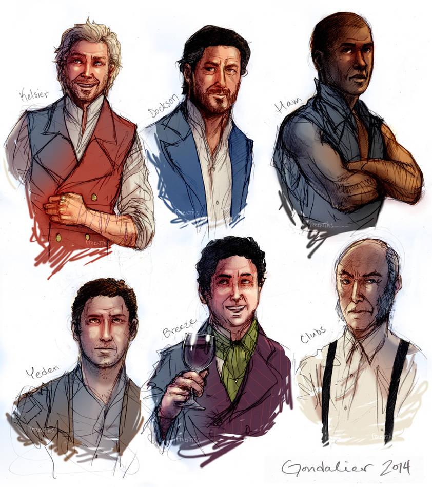
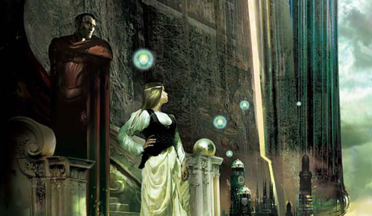
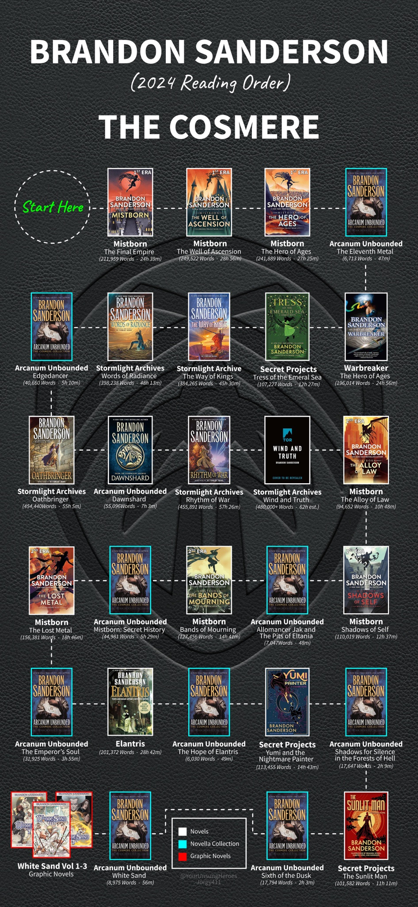

Where to Start?
If you're new to the Cosmere, choosing a starting point can be overwhelming. Here are some recommended books to help you decide:
Mistborn: The Final Empire

A great entry point for readers who enjoy a mix of heist, rebellion, and a unique metal-based magic system. This novel sets up many mysteries that tie into the broader Cosmere.
Elantris

A standalone novel that introduces a fascinating magic system and a once-great city brought low by tragedy. Perfect if you prefer a self-contained story.
The Way of Kings
The first book in The Stormlight Archive series, offering an epic narrative with deep characters and expansive worldbuilding for those ready for a longer, immersive journey.
Recommended Reading Order
